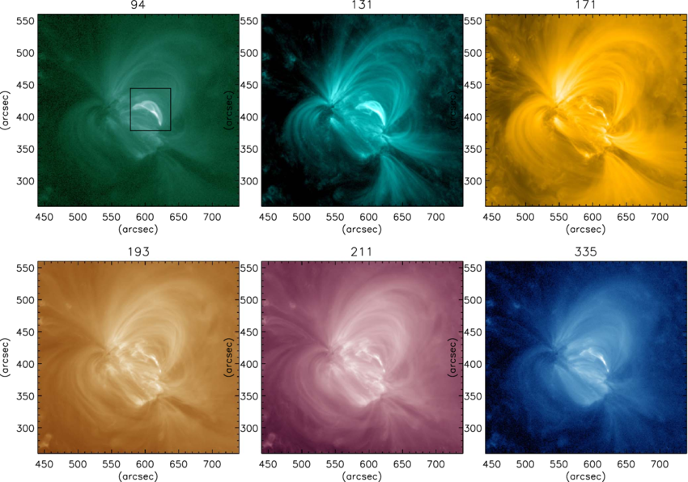

Next: Bibliography Up: How best to study Previous: How best to study
We had already mentioned that at different heights in the solar atmosphere you have different temperatures. By imaging the Sun in narrow passbands centered over wavelengths in the Ultraviolet region, we are effectively looking into the Solar atmosphere at different heights. This is because the temperatures present at the different layers leads to specific ionizations that emit in specific wavelengths in the Ultraviolet region. Spectroscopy is often time consuming and leads to low cadence data. However we can obtain a very high cadence when using imaging and this is specially relevant for changes in the solar surface that happen at very small time scales. Ultraviolet being abosrbed to a high extent by the Earth's atmosphere we need space based telescope for such observations. Existing space based solar observatories like the Solar Dynamic Observatory (SDO) have given us valuable data over the year and is still observing the Sun. A we have already seen, India now has it's own space based solar observatory called Aditya-L1 which carries the Solar Ultraviolet Imaging Telescope (SUIT) developed by the Inter University Center for Astronomy and Astrophysics (IUCAA) along with many other institutions across India. In comparison to the Atmospheric Imaging Assembly (AIA) telescope onboard SDO which images the Sun primarily in 7 Extreme Ultraviolet (EUV) channels, SUIT observes the Sun in 8 Near Ultraviolet (NUV) channels. Which means new and exciting science awaits those who are interested to find it out.
|

|